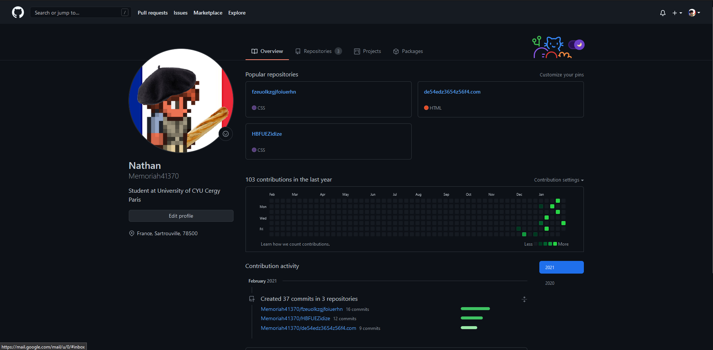
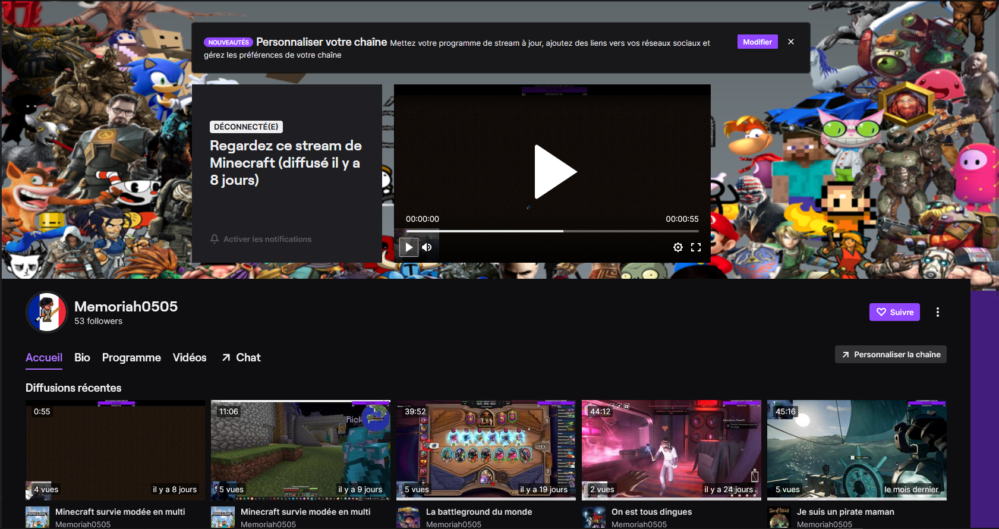

Mon github :
bienvenue sur mon site web !
Je m'appel Nathan Chatard.
J'ai 19 ans.
Je souhaiterais devenir Developpeur full-stack.
J'habite à Sartrouville dans les Yvelinnes.
J'ai une page github où je partage mon travail sur mes différent projets. Ce sont surtout des projets scolaire pour le moment. Vous pourrez retrouver les différents liens sur la page de mon CV.
Ma chaîne twitch :
J'ai une page twitch où je live de temps en temps. J'aime partager différentes choses sur mes lives que ça soit :
- Des jeux vidéos
- De la cuisine
- De la programmation
- Des débats
Ma chaîne youtube :

J'ai une page youtube où j'aime partager ma passion du jeux vidéo. Que ça soit :
- Des moments de gameplays
- Des moments entre ami qui me font rire
- Des replays de mes lives
- Un peu tout est n'importe quoi
Au final cette chaîne est un dépotoire à montage vidéo, souvenir et autre test que je peux faire au niveau du montages vidéo. Je l'alimente quand j'en ai envie. C'est un passe temps et un endroit ou je partage ce qui me plaît.